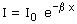

|
En la realidad cuando una onda se propaga por un medio va perdiendo energía que se transforma en calor (Para entendernos: el sonido calienta el aire) La absorción de energía por el medio hace que la intensidad de la onda disminuya exponencialmente (Ley de Lambert) 
|